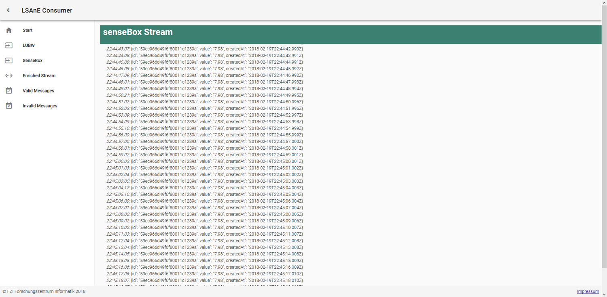
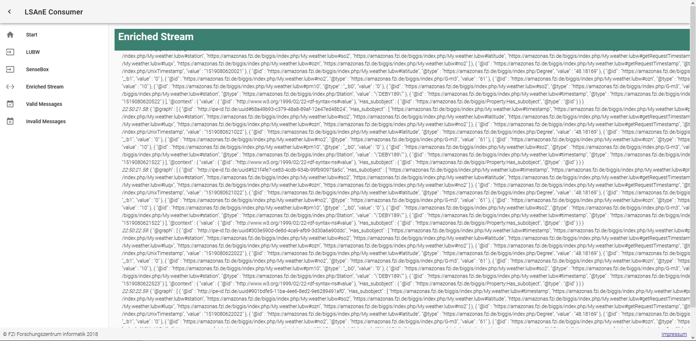

Semantics¶
Due to the heterogeneity of data sources within BigGIS, an explicit semantics is required that provides meaningful descriptions of formats, syntax and semantics of each source. For that purpose, we have developed a semantic data management platform that enables five star meta data including shared vocabularies and background knowledge from concept that are available as Linked Open Data. Using the knowledge base retrieved from the semantic data management platform, we allow users of the platform to add additional meta data to JSON messages of environmental observations. Bases on these annotations, we provide semantic message enrichment on-the-fly and add explicit semantics to the key-value pairs of the observation, including provenance, measured quantities, units and data types. The semantically enriched messages are the basis for further evaluation and transformation. One example for further processing of a semantically enriched data stream is shape constraint validation, which we demonstrate in the last subsection.
Semantic Data Management¶
The first step towards unified and meaningful descriptions of observations is the semantic data management platform. We aim to have these descriptions in an open, machine processable and interlinked format, or in short, as five star data:
Figure: From Open Data to Five Star Data

For that purpose we introduce Linked Data Wiki (LD-Wiki), a MediaWiki bases knowledge management platform. The core of LD-Wiki is the Linked Data Management Module (LDaMM) for updating, querying, reasoning, linking and rule execution on semantic statements in both, LOD and local storage. The architecture of LD-Wiki is as follows:
Figure: Architecture of Linked Data Wiki

LD-Wiki enables easy reuse of properties of well-known entities and context knowledge from LOD. As an example, the common knowledge of the concept of a city is already described in LOD sources like schema.org, WikiData or DBPedia. To find instances of this concept in LOD, we link the category in LD-Wiki to the according LOD concepts:
Figure: Linking concepts from LOD to LD-Wiki

When creating new instances of this category withing LD-Wiki, existing instances of the related concepts in LOD with a similar label can be employed and the values of their properties can be reused in the context of LD-Wiki:
Figure: Linking entities from LOD to LD-Wiki

Semantic Message Enrichment¶
The second step towards unified and meaningful descriptions of observations is the annotation of observation messages. With these annotations, we add explicit semantics to the key-value pairs of a JSON message:
Figure: Explicit Semantics for JSON messages

In the backend, the annotations are linked to shared concepts for unified and meaningful interpretation of observations from heterogeneous sensors. Based on these annotations, an uplifting of non-semantic data streams from heterogeneous observation stations with explicit semantics can be performed on-the-fly:
Figure: Semantic uplifting of JSON messages to JSON-LD based on meta data

The semantic enrichment process creates a new message with a list of values. Each value of the new message is assigned for each member n of a message with the according explicit semantics of meta data m as
with member being the set of N members of a concrete message without any meta data and meta being the set of meta data for a class of messages with explicit semantics of M known types of observations. Each element of both sets consists of key and value. If key_{n} of a member element is equal to key_{m} of a meta data element, value_{n} of member element is combined with value_{m} of the meta data element using the binary operator \circ in order to add explicit semantics to the original observation. The functionality of the binary operator \circ is defined as
The function data(member, meta) adds the data type property of meta to the new message and includes the literal value of member in conjunction with the XSD data type associated with meta. The function object(member, meta) adds the object property of meta to the new message and includes an URI reference to the object in member. As the value of an array is nothing else but a list of N values, we can simply execute the function f(member, meta) on each element n of that list. However, as we identify the meta data for each member by its key, there can only be a single data type property or object property which is applied to all elements of an array. Different types of values within a single array are not supported.
As an example, we use the JSON messages of LUBW stations and push them to a message broker:
Listing: Example of a LUBW observation as JSON
{ "no2": 61, "ozn": 10, "luqx": 0, "latitude": 48.18169, "heigth": 510, "so2": 0, "station": "DEBY189", "pm10": 0, "timestamp": 1516191751218, "longitude": 11.46445 }
Figure: Example for LUBW data stream

Another example are the JSON messages of senseBox-based weather stations, which are pushed to another topic of the message broker:
Listing: Example of a senseBox observation as JSON
{ "title": "Temperatur", "unit": "°C", "sensorType": "HDC1008", "icon": "osem-thermometer", "_id": "59ec966d49f6f80011c1239a", "lastMeasurement": { "value": "7.98", "createdAt": "2018-01-18T13:02:14.330Z" } }
Figure: Example for senseBox data stream

By employing the explicit meta data, we gain a new message stream of JSON-LD messages with explicit semantics of each observation:
Figure: Example for semantically enriched data stream

Semantic Data Validation¶
Once we have a data stream of observation messages from heterogeneous data sources but with explicit semantics, we can also perform a semantic validation for all messages. For these validations, we again employ our annotation platform to define data shapes (patterns) that should be fulfilled by all observation messages, regardless from which observation station they are retrieved:
Figure: Shape constraint annotation

Applying these shapes on the JSON-LD observation messages tells us immediately whether the observation is conform to the defined shape or not:
Figure: Shape constraint validation of JSON-LD messages